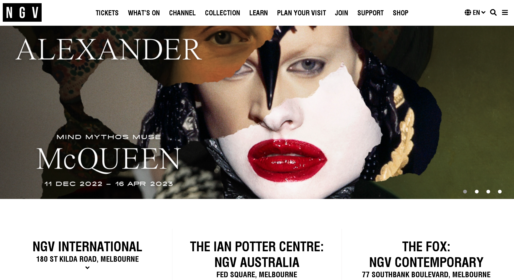

What i think of the NGV
website

Week 2
- What was the first thing you paid attention to when interacting with the experience?
The first thing i was paying attention to was the acknowledgement of country.
- Spend two minutes with the experience and create a list of each of your discrete actions.
- Scrolled down to look at what art is presented
- pressed on the "what's on tab
- scrolled down and clicked on the "China- The Past is Present Tour"
- What part of the experience did you spend the most time engaging with?
Reading the descriptions on certain events.
- What was the most common action in your two minute interaction with the experience?
looking for other headings that would interest me.
- What is your impression of the intended primary goal of the interactive experience?
I believe the primary goal was to create obvious headings of certain events that are occouring in the NGV
- What is your impression of how the interactive experience communicates its primary goal?
The way the use to achieve this is by habing a white background with contrasting black text, and enlarged/bolded the imortant headings or titles.
- What is your impression of how the experience should be interacted with over time? (For how long and how many different times)
Short but still somewhat infomative, where specific infomation should be shown.
- What is your impression of how the interactive experience communicates how it should be interacted with over time?
uhh no clue